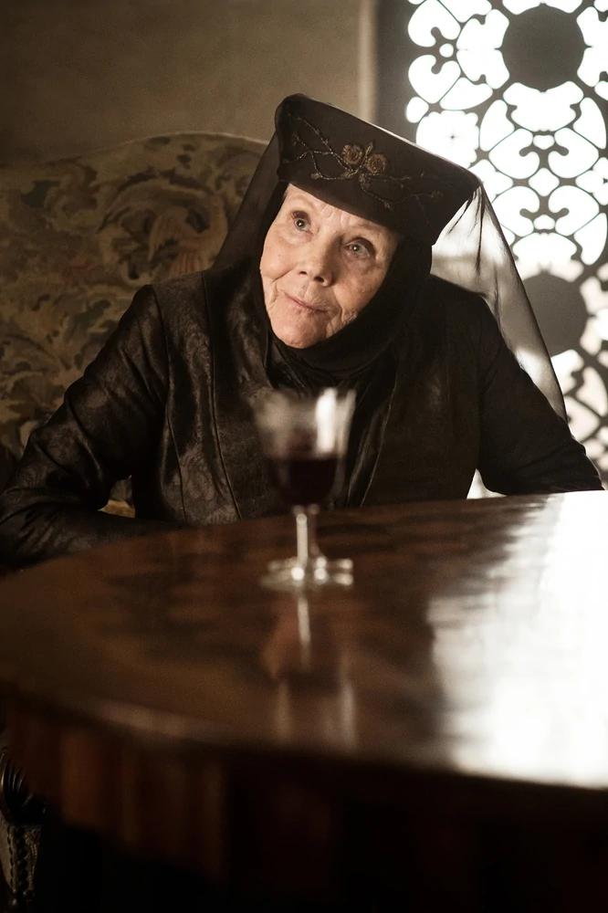

Maison Tyrell
| Photo | Information |
|---|---|
|  | Nom: Olenna Tyrell |
| Titre: Dame de Hautjardin, Gouverneure du Sud, LadyLuthor Tyrell | |
| Origine: La Treille | |
| Culture: Andals | |
| Âge: 72 ans | |
| Statut: décédée | |
| Mort: Suicide par empoisonnement | |
| Enfants: Mace Tyrell, Mina Tyrell, Janna Tyrell Mari: Luthor Tyrell Petit-enfants: Viola Redwyne, Margaery Loras Soeure: Viola Redwyne |
|
 |
Nom: Margaery Tyrell |
| Titre: Reine Consort, Lady | |
| Origine: Hautjardin | |
| Culture: Andals | |
| Âge: 16 ans | |
| Statut: décédée | |
| Mort: Brûlée vive lors de l'explosion de feu grégeois ayant détruit le Septuaire de Baelor causée par Cersei Lannister. | |
| Mari: Renly Baratheon, Joffrey Baratheon, Tommen Baratheon Grand-parents: Olena Tyrell, Luthor Tyrell Parents: Mace Tyrell, Alerie Tyrell Frère: Loras Tyrell |
|
 |
Nom: Loras Tyrell |
| Titre: Ser, Lord Commandant de la Garde Royale (sous Renly Baratheon) | |
| Origine: Hautjardin | |
| Culture: Andals | |
| Âge: 16 ans | |
| Statut: décédé | |
| Mort: Brûlé vif lors de l'explosion de feu grégeois ayant détruit le Septuaire de Baelor causée par Cersei Lannister. | |
| Grand-parents: Olena Tyrell, Luthor Tyrell Parents: Mace Tyrell, Alerie Tyrell Frère: Margaery Tyrell |